A teen boy's bedroom doesn't have to look like it was decorated for a much younger kid or furnished entirely from a dorm-room clearance sale. Getting it right is part compromise, part creativity, and admittedly a bit of a guessing game, but a handful of smart moves gets it there without much drama.
The trick is keeping it personalized, reasonably streamlined, and just a little more grown-up than whatever came before. Give him room to actually express himself, without the room tipping into total chaos.

15 Teen Boy Bedroom Ideas
1. Let Him Have a Say, Within Limits
Real ownership over the space matters more than most parents expect, and giving him some say goes a long way toward keeping the room actually used.
Letting him choose the accent color, pick out his own art, or weigh in on the bedding keeps the final result from feeling imposed.
The end result doesn't just look good when it's collaborative, it genuinely feels like his, which is really the whole point.
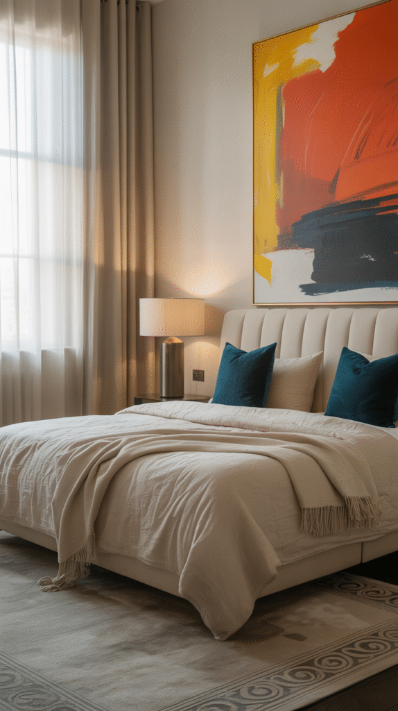
Street Graffiti Pop Art Canvas Wall Art for Bedroom, Abstract Painting
Shop on Amazon2. Don't Forget the Tech Dock
Five devices charging at once off a tangle of cords is a safety hazard and an eyesore in equal measure.
A dedicated charging station or a multi-device dock keeps all of that in one tidy spot instead of scattered across every outlet in the room.
It's a small addition, but it makes a noticeable difference in how organized and modern the whole room actually feels day to day.
3. Lean Into Travel and Adventure Vibes
A wanderlust-leaning teen doesn't need an actual passport stamp to justify an adventure-themed corner of the room.
A world map on the wall, a few travel-inspired prints, or a shelf of collected souvenirs and mementos build that aspirational feel.
It's less about where he's actually been and more about creating a space that points toward where he wants to go.
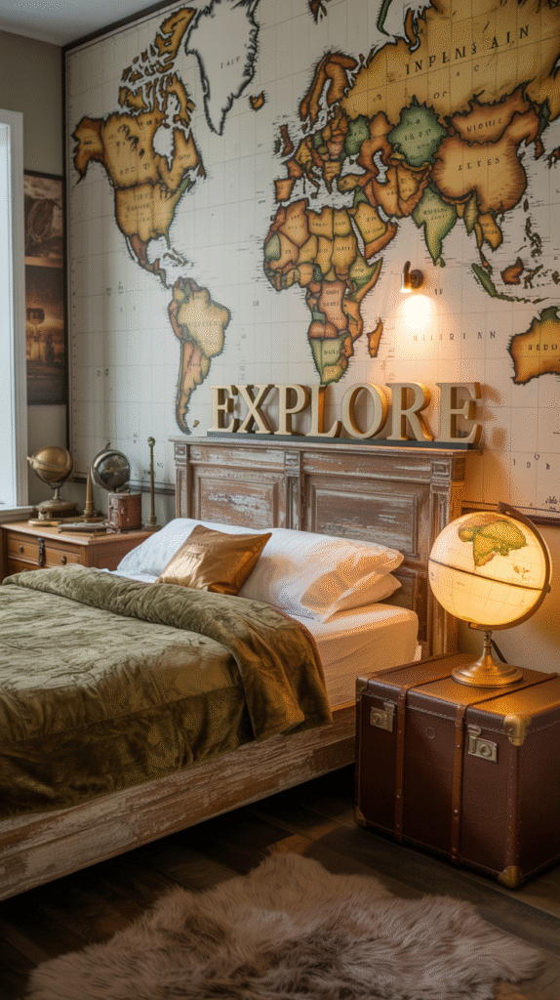
Colorfull Worlds Layered 3D Wooden World Map Wall Art, Medium, Mixed Wood
Shop on Amazon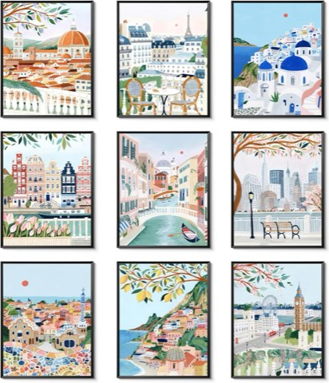
Vintage Travel Cities Posters Wall Art Set of 9, Colorful Landscape Prints
Shop on Amazon4. Carve Out a Workout Corner
For anyone into fitness, a small home gym setup tucked into one corner of the room goes a long way.
A yoga mat, a set of adjustable dumbbells, and a resistance band or two cover most of what's actually needed in a tight footprint.
Beyond the function, it quietly signals real support for whatever goals he's chasing that particular month.
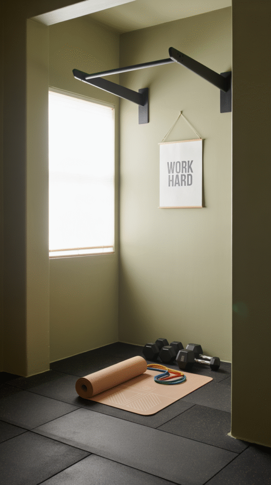
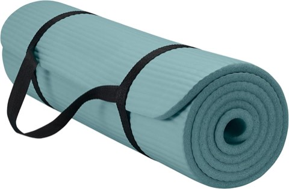
Gaiam Thick Yoga Mat with Easy-Cinch Carrying Strap, Exercise and Fitness Mat
Shop on Amazon5. Set Up a Personal Command Center
Teenagers run on low-key chaos, and a dedicated command zone helps corral at least some of it into one spot.
A corkboard, a small calendar, a charging station, and a spot for keys and wallet give scattered daily items one consistent home.
It gives the illusion of real organization even if it only gets fully used a couple of times a week, which, realistically, is still a win.
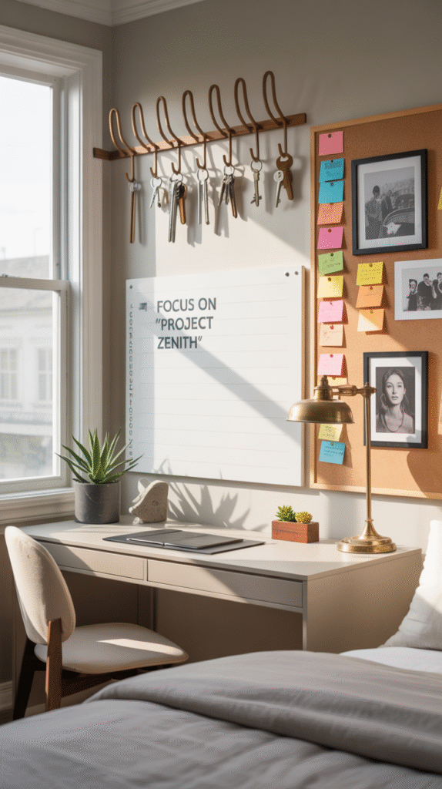

6. Add a Rug for Instant Warmth
Cold laminate floors and zero textiles are a dead giveaway of an unfinished teen room. A rug fixes that almost immediately.
Something durable and easy to clean in a bold pattern or deep solid color adds warmth without demanding careful maintenance.
As a bonus, it muffles sound, genuinely useful the moment gaming or music gets loud enough to notice from down the hall.
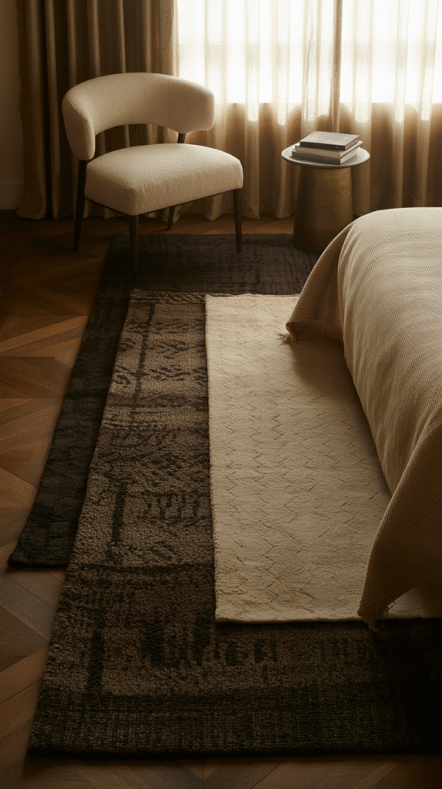
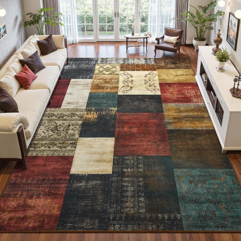
DweIke Washable Patchwork Area Rug, 5 x 7 Ft, Modern Geometric Colorful, Non-Slip
Shop on Amazon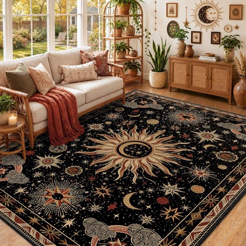
Washable Celestial Area Rug, 5 x 7 Ft, Black Gold Beige Red, Vacuum-Friendly
Shop on Amazon7. Build In a Gaming Setup, Without Taking Over
Gaming is a genuine lifestyle for a lot of teens now, and it doesn't have to turn the whole room into a blinking command center.
A compact desk, a comfortable chair, and clean cable management keep the setup contained to one corner rather than dominating the space.
Done with a little restraint, it functions well without swallowing the rest of the room's personality.
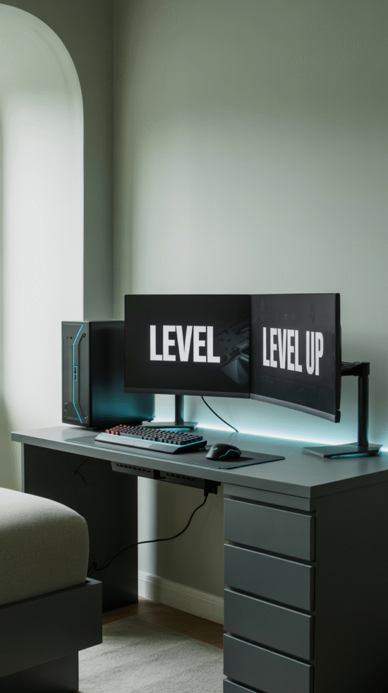
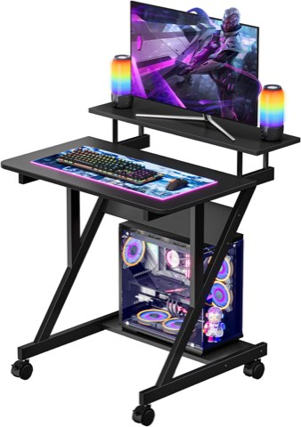
Dripex Small Computer Desk with Monitor Shelf, 27.5 Inch Compact Gaming Desk
Shop on Amazon8. Upgrade the Bedding
At some point the dinosaur sheets have to go, and upgrading the bedding is one of the fastest ways to make the whole room feel more current.
A solid duvet in a grown-up color, a textured throw, and a couple of simple pillows add real polish without sacrificing comfort.
It's not about making the bed fussy, it's a small, low-effort change that shifts the whole room's feel almost instantly.
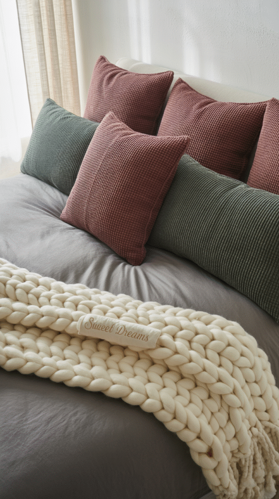

9. Pick a Grown-Up Color Palette
Neon green and lava-lamp blue can stay in the past. A more grown-up palette ages with him instead of needing a redo every couple of years.
Navy and camel, charcoal and rust, or a muted sage with warm wood all read as considerably more mature without losing any personality.
These combinations also work as a flexible backdrop, whatever his interests shift to next, the palette underneath doesn't need to change.
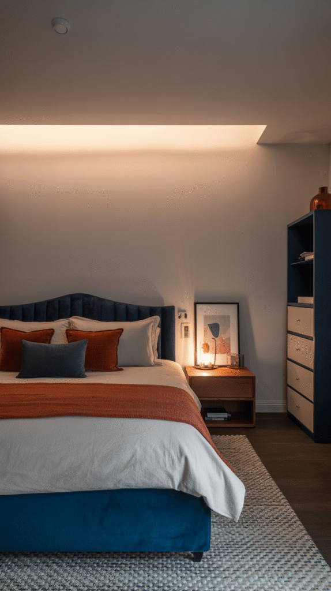
10. Make Storage Look Like a Design Choice
Teen boys aren't naturally tidy, but stylish storage genuinely gets used more than the plain, forgettable kind ever does.
Open cube shelving, a sleek hamper, or a closet system that's actually easy to use all make organizing feel less like a chore.
The goal is function that doesn't read as boring, storage that looks intentional gets used; storage that looks like an afterthought gets ignored.
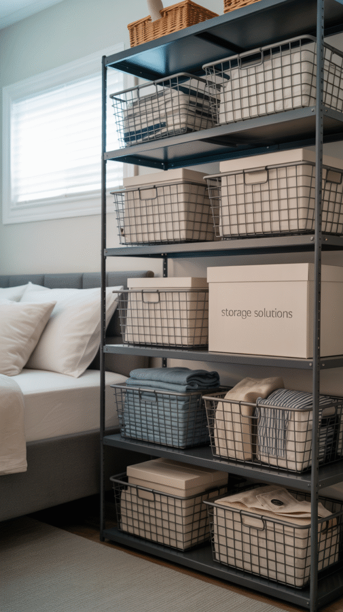
11. Layer Lighting Like It Matters
Lighting does more for a room's mood than almost anything else on this list, and it's not just about LED strips, though those earn their place too.
Layering a few sources, an overhead fixture, a desk lamp, and some ambient strip lighting, gives the room real depth instead of one flat wash of light.
It's an affordable, genuinely customizable upgrade, which is part of why LED lighting shows up in nearly every teen bedroom done well.
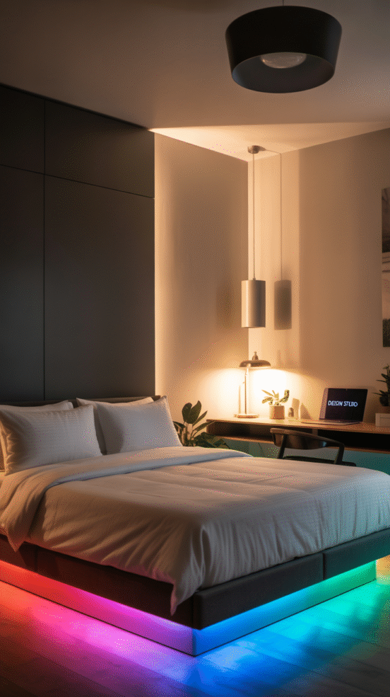
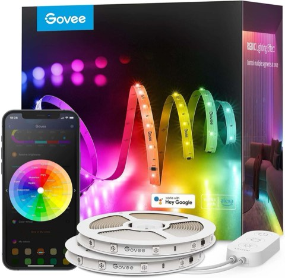
Govee 100ft RGBIC LED Strip Lights, Works with Alexa and Google Assistant
Shop on AmazonPzloz LED Desk Lamp with Clamp, Eye Caring Architect Lamp, Dual Screen Compatible
Shop on Amazon12. Let His Interests Actually Show
The real trick to a room that gets used and respected is making it about him specifically, not a generic Pinterest version of a "boy room."
A mounted skateboard, framed vinyl records, a jersey display, or a shelf of trophies all give the space real character instead of a borrowed aesthetic.
Those personal touches tend to do double duty, too, a room that reflects someone's actual interests is a room they're more likely to want to keep looking decent.
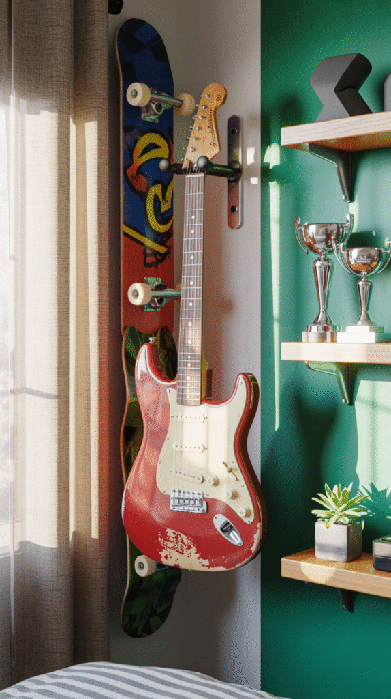
13. Add a Lounge Zone Beyond the Bed
Carving out a dedicated chill spot that isn't just the bed makes the whole room feel considerably more livable.
A beanbag chair, a small loveseat, or even a floor cushion setup gives him somewhere to actually hang out with friends.
It also means guests have somewhere to sit that isn't the bed, which tends to keep the rest of the house a little tidier too.
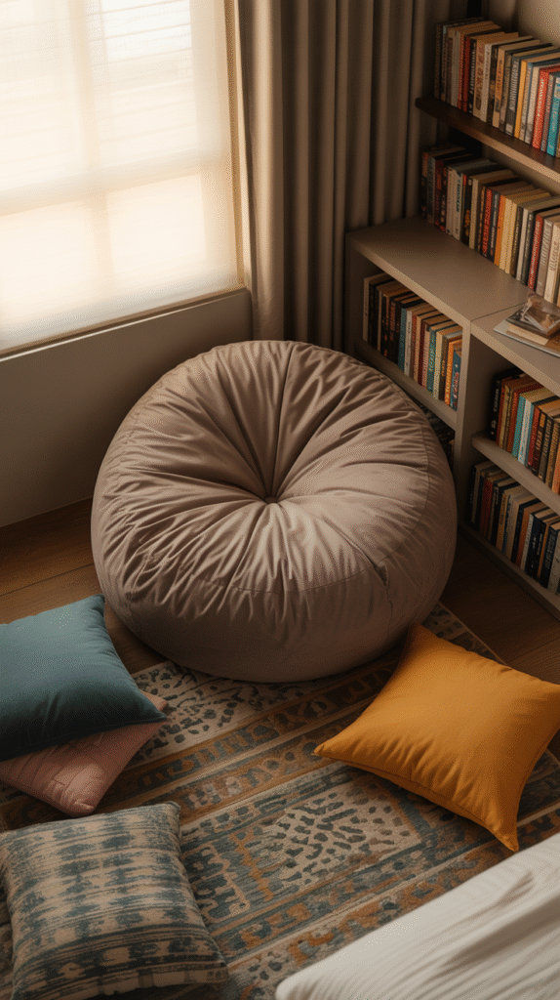
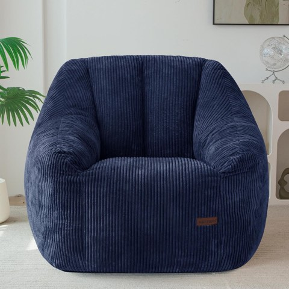
MAXYOYO Bean Bag Chair for Adults, Foam-Filled Floor Sofa for Reading, Navy
Shop on Amazon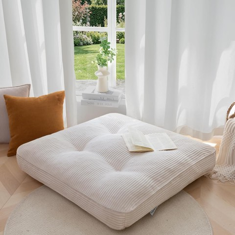
HIGOGOGO 35 Inch Floor Pillow Cushion for Adults, Extra Large Square Meditation Cushion
Shop on Amazon14. Keep Furniture Minimal and Sturdy
Frilly bedding and antique side tables were never going to land here, so it's worth leaning fully into something more functional.
Clean-lined furniture in durable materials holds up far better than anything delicate, teen boys are not known for being gentle with their rooms.
Simple doesn't mean boring. A few well-chosen, sturdy pieces read as more intentional than a room full of mismatched furniture anyway.
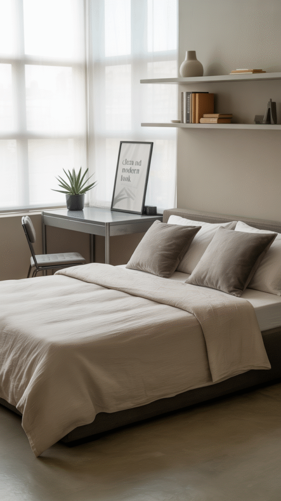
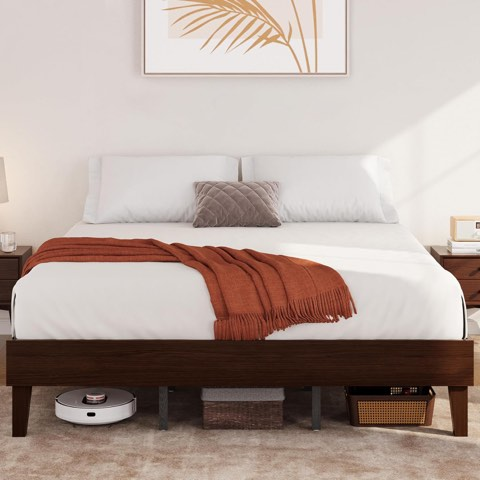
Yaheetech King Size Solid Wood Platform Bed Frame, Low Profile, Dark Walnut
Shop on Amazon15. Go Bold With an Accent Wall
A strong accent wall can turn a basic bedroom into a space with actual personality almost overnight.
Deep navy, charcoal, forest green, or even a bold geometric pattern reads as edgy and current rather than babyish.
It says "this has style" without looking like it tried too hard, which is exactly the tone most teen boys are actually going for.
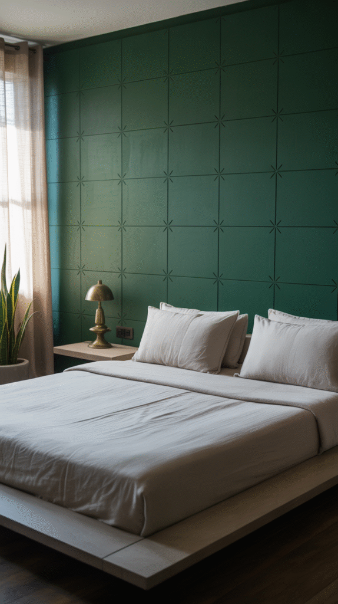
Livelynine Royal Blue Peel and Stick Wallpaper, Dark Blue Contact Paper
Shop on Amazon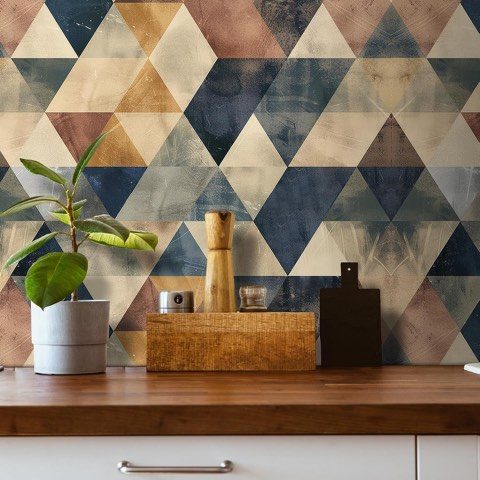
Livelynine Retro Geometric Peel and Stick Wallpaper, Mid Century Modern, 17.5 x 276 Inch
Shop on AmazonFinal Thoughts
Whether the room belongs to a moody skater, a dedicated gamer, or a budding minimalist philosopher, these ideas work as a reliable starting point for a space he'll actually want to spend time in.
Keep it personal, keep it functional, and let him have a real say in a few of the decisions. A room that reflects who he actually is gets treated better than one that was simply handed to him finished.